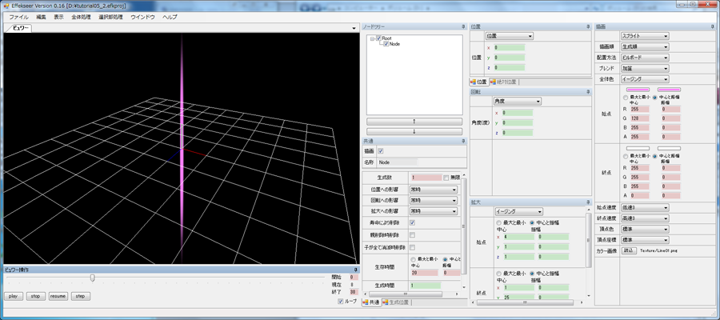

No05.実例「斬撃」
はじめに
この項目では実際に斬撃のエフェクトを作成してみます。剣で切るようなエフェクトということで、真ん中に剣線が入り、周囲に細かい衝撃が飛ぶようなエフェクトが発生します。
剣線
剣線を作成します。攻撃した瞬間は小さいですが、その直後に伸びるようにしてみます。まず、剣線の時間を20フレームと仮定し、「ビュワー操作」画面から「終了」を30フレーム、「ループ」にチェックを入れておきます。こうすることにより、「ビュワー」画面で連続で再生しつつ編集ができます。次に、「生成時間」を20フレームに変更します。こうすることで20フレームで消えるようになります。最後に、「拡大」画面で拡大するにします。今回はイージングを使用し、最終的に縦に長くなるように編集しました。実際に変更してみたエフェクトは「tutorial05_1.efkproj」として保存されています。

色を適用します。「描画」画面から、「ブレンド」を加算に変更、そして今回はピンク色の斬撃にしたいので、「全体色」にはイージングを指定し、ピンク色から透明な白に変化するようにします。そして、最後に「Line01.png」という細い線が描いてあるテクスチャを設定します。これで縦方向の剣線ができました。実際に変更してみたエフェクトは「tutorial05_2.efkproj」として保存されています。
このままでは、縦の剣線です。これはこれでありですが、折角なので斜め45度に切ってみましょう。ビルボードのままでは回転が適用されないので、まず「配置方法」を「Z軸回転」に変更します。これで、Z軸の回転が適用されるようになりました。そして、Z軸の回転角度を-45度に指定します。こうすることで、斜めの剣線ができます。実際に変更してみたエフェクトは「tutorial05_3.efkproj」として保存されています。

衝撃
次に、周囲の衝撃部分を作成します。まず、「ノードツリー」から「Root」を選択し、ノードの追加を行います。次に、先ほどのノードをコピーして、今作成したノードに貼り付けます。このままでは重なってしまうので、回転角度を振幅180度で回転するようにします。また、数も足りないので「生成数」も10に増やします。そして、拡大を弄り小さめにします。そうすることで小さめの衝撃っぽいのができます。実際に変更してみたエフェクトは「tutorial05_4.efkproj」として保存されています。

これでは、まだ物足りないので、円形のエフェクトを追加します。「Root」を選択し、ノードの追加を行います。「生存時間」を20に、拡大縮小を調整し、拡大するようにします。テクスチャには「Particle01.png」を使用します。色もピンク色に加算するようにしましょう。そうすると、大分それっぽくなります。実際に変更してみたエフェクトは「tutorial05_5.efkproj」として保存されています。

これでも、まだ物足りないので、さらに円形のエフェクトを追加します。「Root」を選択し、ノードの追加を行います。そして先ほど作成したノードをコピーして貼り付けます。テクスチャには「Particle03.png」を使用し、透明度等を調節します。そうすると最終的にこのようになりました。実際に変更してみたエフェクトは「tutorial05_6.efkproj」として保存されています。

最後に
今回、あっさり説明していますが、その途中で何度も試行錯誤してみます。綺麗なエフェクトを作成するには試行錯誤が大事です。